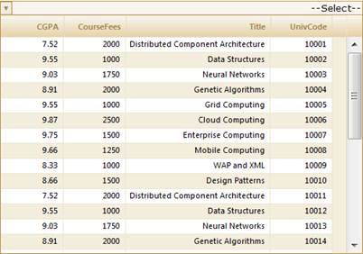
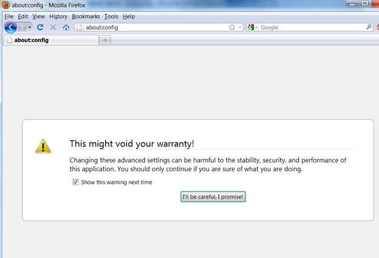
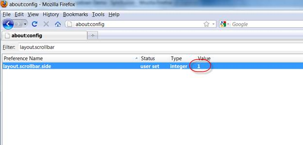
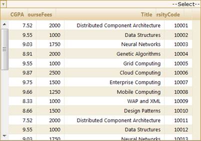
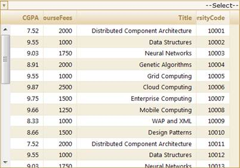

The MultiColumnDropDown control now supports a full-fledged right-to-left mode which aligns content in the control from right to left.
Use Case Scenarios
The RightToLeft property is used for international applications where the language is written from right to left, such as Hebrew or Arabic. When this property is set to True, the MultiColumnDropDown control will be displayed from right to left.
Adding Right-To-Left Support to MultiColumnDropDown Control
Enabling right-to-left support can be done in two ways:
· Builder
· MultiColumnDropDownModel
Through Builder
To enable right-to-left support using Builder:
Create a model in the application. Refer to Getting Started>Adding a Model to the Application.
In the view, create the MultiColumnDropDown control and configure its properties.
|
View [ASPX]
<%=Html.Syncfusion().MultiColumnDropDown<Student>("MultiColumnDropDown") .Datasource((IEnumerable) ViewData["data"]) .DisplayExpression(new int[] {2, 3, 5}) .Width(500) .Text("--Select--") %>
|
|
View [cshtml]
@(new HtmlString(Html.Syncfusion().MultiColumnDropDown<Student>("MultiColumnDropDown") .Datasource((IEnumerable) ViewData["data"]) .DisplayExpression(new int[] {2, 3, 5}) .Width(500) .Text("--Select--") .ToString()))
|
Enable/disable right-to-left mode using the RightToLeft() method.
|
View [ASPX]
<%=Html.Syncfusion().MultiColumnDropDown<Student>("MultiColumnDropDown") .Datasource((IEnumerable) ViewData["data"]) .DisplayExpression(new int[] {2, 3, 5}) .Width(500) .RightToLeft(true) .Text("--Select--") %>
|
|
View [cshtml]
@(new HtmlString(Html.Syncfusion().MultiColumnDropDown<Student>("MultiColumnDropDown") .Datasource((IEnumerable) ViewData["data"]) .DisplayExpression(new int[] {2, 3, 5}) .Width(500) .RightToLeft(true) .Text("--Select--") .ToString()))
|
Set its data source and render the view.
|
Controller
/// <summary> /// Used for rendering the MultiColumnDropDown initially. /// </summary> /// <returns>View page; it displays the MultiColumnDropDown.</returns> public ActionResult Index() {
var Data = new StudentDataContext().AutoFormatStudent.Take(200); ViewData["data"] = Data; return View(Data); } |
Run the application. The MultiColumnDropDown will appear as shown below.

Figure 308: Right-To-Left Enabled MultiColumnDropDown Control
Through MultiColumnDropDownModel
To enable right-to-left support using MultiColumnDropDownModel:
Create a model in the application. Refer to Getting Started>Adding a Model to the Application.
Create the MultiColumnDropDown control in the view.
|
View [ASPX]
<%=Html.Syncfusion().MultiColumnDropDown<Student>("Multidropdown",(MultiColumnDropDownModel) ViewData["dropdown"]) %> |
|
View [cshtml] @(new HtmlString(Html.Syncfusion().MultiColumnDropDown<Student>("Multidropdown",(MultiColumnDropDownModel) ViewData["dropdown"]).ToString())) |
Create an instance for MultiColumnDropDownModel and assign Datasource to the model.
|
Controller // Create instance to MultiColumnDropDown model and assign properties. MultiColumnDropDownModel dropdown = new MultiColumnDropDownModel() { Datasource = new StudentDataContext().JSONStudent.Skip(0).Take(30).ToList(), Text = "--Select--", DisplayExpression = new int[3] { 2, 3, 5 }, Width = 500 };
|
Enable/disable right-to-left mode using the RightToLeft property.
|
Controller
// Create instance to MultiColumnDropDownMmodel and assign properties. MultiColumnDropDownModel dropdown = new MultiColumnDropDownModel() { Datasource = new StudentDataContext().JSONStudent.Skip(0).Take(30).ToList(), Text = "--Select--", DisplayExpression = new int[3] { 2, 3, 5 }, Width = 500, RightToLeft = true };
|
Pass the model to the view using ViewData().
|
Controller // Pass the MultiColumnDropDownModel to view using ViewData() ViewData["dropdown"] = dropdown; |
Run the application. The MultiColumnDropDown will appear as shown below.
Figure 309: Right-To-Left Enabled MultiColumnDropDown Control
In the Mozilla browser, the side the scroll bar appears on can be configured in right-to-left (RTL) and left-to-right (LTR) modes. The following are the options to configure ScrollbarSide. Presently, the MultiColumnDropDown control supports both sides of the scrollbar in RTL mode using the MozillaLayoutScrollbarSide property.
· 0—In RTL, right-side scroll bar. In LTR, right-side scroll bar.
· 1—In RTL, left-side scroll bar. In LTR, right-side scroll bar.
· 2—In RTL, right-side scroll bar. In LTR, left-side scroll bar
The following steps are necessary to configure the scroll bar side in the Mozilla browser.
1. Type the URL about:config in the Mozilla browser and press ENTER to configure the settings of the Mozilla browser.

Figure 310: about:config
2. Type layout.scrollbar in the Filter: text box and set the value to 1. The default value is 0.

Figure 311: Setting Scroll Bar Side
3. Now MultiColumnDropDown alignment issue will rise as shown in the following screenshot.

Figure 312: Alignment Issue
Now set the MozillaLayoutScrollbarSide to LayoutScrollbarSide.Left. Then MultiColumnDropDown will look as shown in the following screenshot.

Figure 313: Alignment Issue Fixed
Properties
|
Property |
Description |
Type |
Type of the property |
Value it accepts |
Any other dependencies/sub-properties associated |
|
RightToLeft |
Used to enable the RightToLeft mode in MultiColumnDropDown |
ServerSide |
Boolean |
True/false |
NA |
|
MozillaLayoutScrollbarSide |
Used to set the Layout scrollbarside of Mozilla browser. |
ServerSide |
LayoutScrollbarSide |
LayoutScrollbarSide.Left LayoutScrollbarSide.Right |
RightToLeft |
Methods
|
Method |
Arguments |
Return type |
Description |
Reference links |
|
RightToLeft(Boolean) |
Boolean |
IMultiColumnDropDownBuilder
|
Used to enable the RightToLeft mode in MultiColumnDropDown |
NA |
|
MozillaLayoutScrollbarSide(LayoutScrollbarSide) |
LayoutScrollbarSide |
IMultiColumnDropDownBuilder
|
Used to set the Layout scrollbarside of Mozilla browser. |
Sample Link
To access the sample link:
1. Go to Grid MVC Demos in the Sample Browser (Refer to Installation and Deployment>Samples and Location).
2. Select the MultiColumnDropDown on the left side Accordion.
3. Select the Localization demo to view the MultiColumnDropDown full-fledged demo.